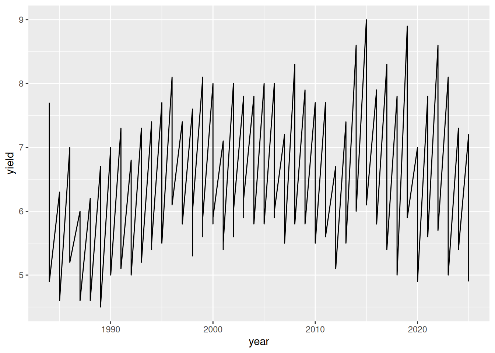
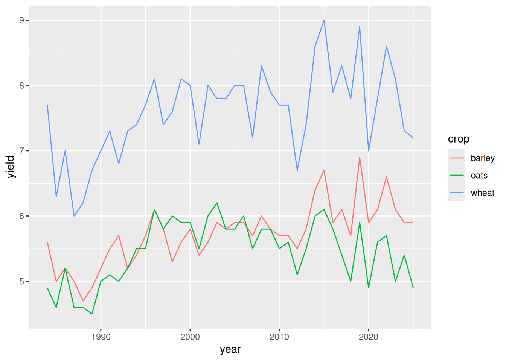
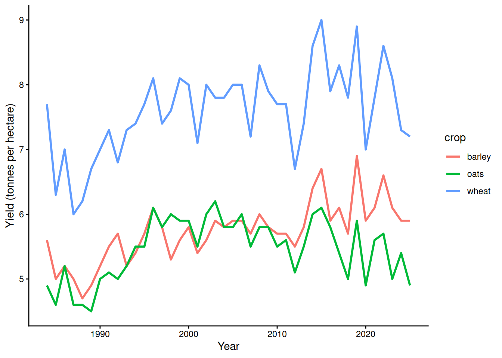

9 Plotting a line graph with ggplot
Now we will create a line plot for crop yield over time using the ggplot() function.
This plot will help you start to answer the following related questions:
Research Questions:
- How has yield of the three cereal crops in the UK changed over time?
- Is there evidence to support that climate change has affected yield of the three cereal crops in the UK over the past ~10 years?
Before you start making a graph, the first step is to think about what variable you want to put on each axis.
Q: In this case, what variables do you want to put on the x-axis and y-axis?
9.1 A basic ggplot plot
The ggplot() function itself only has two required arguments:
- the name of your data frame (in this case,
data = cropdata_longor justcropdata_long- they both work the same way) - an aesthetic that defines what your x and y variables are
The aesthetic is formatted like: aes(x = x_var_name, y = y_var_name). So if we want to look at crop yields over time, with time on the x-axis and crop yield on the y-axis, we would use: aes(x = year, y = yield).
However, the ggplot() function alone is not enough to make a graph.
We must also add the different parts of the figure as layers, with a + between each layer.
Layers of data are added with geom_x() functions, where the x changes depending on the type of graph you want to make.
Tip: For a line plot, use geom_line() to plot the data as a line of connected x-y coordinates.
Make a line space, type the minimum code to make a line plot using the crop yield data, and run it.

This graph is not very useful because we aren’t distinguishing between the three different crops. This means that R is drawing lines between coordinates in ways that don’t make sense.
9.2 Different lines for each crop
The graph would make more sense and be much more useful if we plotted each crop as a different line in a different colour.
If you want to change the colour of a data layer based on a third variable, you need to add it to the aesthetic argument as shown below. ggplot will automatically add a legend (you made need to scroll to the right to see it in the workbook).
Modify your existing code to match the example below.

Now we can see the lines for each crop, but because they have such different yields, it’s very difficult to see any meaningful information about the crops that aren’t sugar beets or potatoes.
9.3 Editing axis labels, and changing the theme and line thickness
In the next step, we’ll make a few modifications to make the plot more attractive.
First, we’ll use the labs() function to format the axis labels properly - with units! (Right now it is just printing the column names.)
Second, we’ll change the theme to something a bit more minimalist and attractive (add the +theme_classic() function).
Finally, we’ll change make the lines a little bit thicker (add a linewidth = 1 argument to the geom_line() function).
Tip: Remember that each layer in a ggplot graph is separated by a +
Modify your existing code again to match the example below.
ggplot(cropdata_long, aes(x = year, y = yield, colour = crop)) +
geom_line(linewidth = 1) +
labs(x = "Year", y = "Yield (tonnes per hectare)") +
theme_classic()
9.4 Saving an R plot
Now that you have an attractive plot, you need to save it so you can add it to our coursework.
The easiest way to do that is to:
- Save the plot as an object
- Use the pipe operator (
|>) to provide the data, instead of giving the argument inside ofggplot() - Use the
ggsave()function to save the plot.
Warning: If you save the plot as an object, it will not longer print automatically.
Instead, you will need to use the print() function to get the plot to print, as shown below.
The ggsave() function needs two arguments:
- The name of the file you want to create.
- The name of the saved plot object.
However, it’s often helpful to provide some other optional arguments: specifically, the width and height of the file you want to create.
Modify your existing code again to match the example below.
fig_crops <- cropdata_long |>
ggplot(aes(x = year, y = yield, colour = crop)) +
geom_line(linewidth = 1) +
labs(x = "Year", y = "Yield (tonnes per hectare)") +
theme_classic()
print(fig_crops)
ggsave("Fig_crops_CW1.png", fig_crops, width = 8, height = 4)
9.5 Download the R plot
Now the plot is saved on the R server.
But to use it in your coursework, you’ll need to download it to your H:/ drive so that you can insert it into your Word document for the coursework report.
To download your plot image file:
- Check to box next to the plot in your Files pane
- Click on the gear icon to open the settings menu
- Select Export
- Click Download
You will probably also want to move the file from your Downloads folder to your Documents folder.